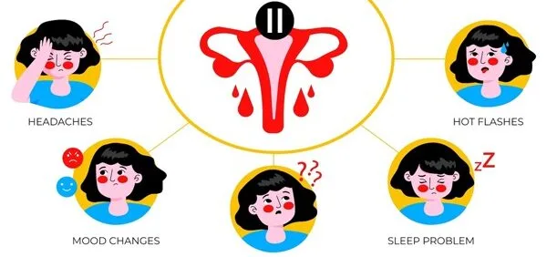
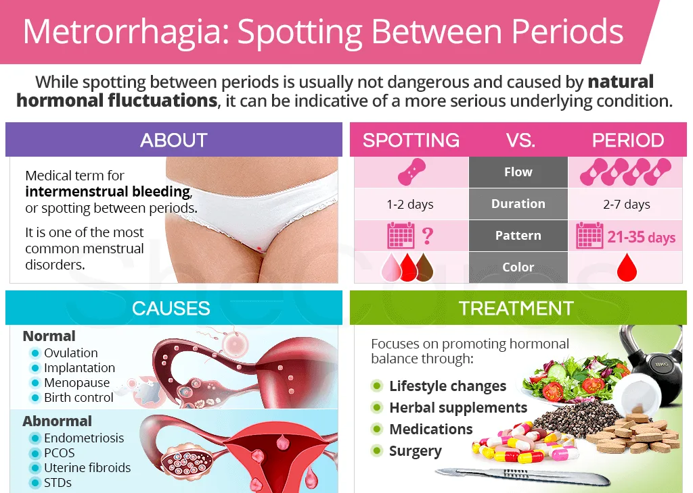

Expanded Nursing Uganda Explanation
Metrorrhagia should be understood beyond a short definition. Link the concept to patient history, focused assessment, common risks, nursing priorities, documentation and evaluation of outcomes.
01 METRORRHAGIA/INTERMENSTRUAL BLEEDING
Metrorrhagia , now commonly called Intermenstrual bleeding is vaginal bleeding that occurs at irregular intervals not associated with the menstrual cycle.
Metrorrhagia is a medical term used to describe irregular or abnormal uterine bleeding that occurs between menstrual periods.
It is characterized by light spotting that occurs outside of one’s period patterns and does not need sanitary protection .
This is a symptom of some underlying pathology which may be organic or functional.
02 Causes of Metrorrhagia
- Fibroid Uterus : Presence of uterine fibroids, noncancerous growths that can cause irregular and abnormal bleeding .
- Adenomyosis : A disorder involving the glands that secrete cervical mucus and fluids, contributing to abnormal uterine bleeding.
- Pelvic Endometriosis : Presence of endometrial tissue outside the uterine lining, leading to premenstrual pain and dysmenorrhea.
- Chronic Tubo-Ovarian Mass : Persistent mass involving the fallopian tubes and ovaries, contributing to irregular uterine bleeding.
- Retroverted Uterus (Due to Congestion): Uterus tilted backward, causing congestion and contributing to metrorrhagia.
- Uterine Polyp : Presence of a polyp with a rich blood supply, making it prone to easy bleeding.
- Cervical Erosions : Presence of wounds on the cervix with increased blood supply, leading to bleeding.
- Cancer of the Cervix or Endometrial Cancer: Malignant growths in the cervix or endometrium causing abnormal bleeding.
- Chronic Threatened Abortion or Incomplete Abortion : Prolonged or incomplete abortion affecting uterine function and causing irregular bleeding.
- Retained Pieces of Placenta : Residual placental fragments interfering with uterine contraction, preventing proper closure of blood vessels after childbirth.
- Mole Pregnancy : Abnormal uterine mass growing post-fertilization, characterized by an excess of blood capillaries leading to bleeding.
- Ovulation Bleeding: Bleeding associated with the process of ovulation.
- Short Cycles like Polymenorrhea : Menstrual cycles shorter than the average duration, contributing to irregular and frequent uterine bleeding.
- Infections : Having lower abdominal or pelvic infections such as vaginitis can lead to metrorrhagia.
03 Signs and symptoms of Metrorrhagia
- Bleeding Between Menstrual Periods : Presence of abnormal bleeding episodes occurring between regular menstrual cycles.
- Irregular Menstrual Cycles: Variations in the normal pattern of menstrual cycles, including changes in cycle length or timing.
- Heavier or Lighter Bleeding Than Usual During Menstrual Periods: Experiencing unusually heavy or light menstrual flow compared to the individual’s typical pattern.
- Prolonged Bleeding That Lasts Longer Than Normal: Extended duration of menstrual bleeding beyond the usual timeframe.
- Pelvic Pain or Discomfort : Presence of pain or discomfort in the pelvic region, often associated with abnormal bleeding.
- Fatigue or Tiredness Due to Blood Loss : Feeling tired or fatigued as a result of significant blood loss during irregular bleeding episodes.
- Anaemia Symptoms: Manifestations of anaemia, including: Shortness of Breath, Dizziness, Weakness.
04 Investigations of Metrorrhagia
Assessment :
- Thorough medical history and physical examination .
- Detailed history about menstrual cycles, associated symptoms, and relevant medical conditions.
- Pelvic examination to assess the condition of reproductive organs.
Diagnostic Tests:
- Hormone Level Assessment : Blood tests to evaluate hormone levels, including oestrogen, progesterone, and thyroid hormones. This helps identify hormonal imbalances that may contribute to metrorrhagia.
- Transvaginal Ultrasound : Imaging test for visualizing the uterus and ovaries, detecting structural abnormalities or conditions such as fibroids.
- Endometrial Biopsy : Collection of a sample from the uterine lining for microscopic evaluation. This procedure helps identify abnormalities, including signs of cancer.
- Hysteroscopy : Procedure involving the insertion of a thin, lighted tube into the uterus to visualize the uterine cavity. It aids in detecting abnormalities or issues affecting the uterine lining.
- Digital and Speculum Examination : Examination techniques to visualize the cervix for any signs of abnormality.
- Pelvic Scan : Imaging scan focused on visualizing pelvic organs, assisting in ruling out any abnormalities.
- Urine Test: Urine samples to check for pregnancy, infection, or STDs.
- Pap Smear: To rule out cancer.
Aims of Management:
- Alleviate Symptoms.
- Determine and address the root causes of metrorrhagia.
- Prevent Complications
Medical and Nursing Management of Metrorrhagia:
- Assessment : Medical History and Physical Examination: Gather detailed information on menstrual cycles, symptoms, and relevant medical conditions. Conduct a pelvic examination to assess reproductive organs.
- Hormonal therapy: Depending on the underlying cause, hormonal medications, such as birth control pills or progestin therapy, may be prescribed to regulate the menstrual cycle and reduce abnormal bleeding.
- Nonsteroidal anti-inflammatory drugs (NSAIDs): These medications can help manage pain and reduce bleeding during episodes of metrorrhagia.
- Treatment of underlying conditions : If metrorrhagia is caused by conditions such as fibroids, polyps, or infections, appropriate treatment strategies will be implemented to address the specific cause.
- Surgical interventions : In some cases, surgical procedures may be necessary to remove uterine abnormalities or address the underlying cause of metrorrhagia.
- Supportive care : Nursing management focuses on providing emotional support, educating patients about menstrual hygiene and symptom management, and promoting overall well-being.
- Rest : Rest is advised during the bleeding phase. Assurance and sympathetic handling are helpful particularly in adolescents. Anaemia should be corrected energetically by diet, hematinics, and even by blood transfusion.
- Monitoring and follow-up: Monitor patients’ response to treatment, assess the effectiveness of interventions, and ensure appropriate follow-up care.
05 Nursing Uganda Clinical Lens
Use Metrorrhagia as a practical nursing topic, not only a memorized definition. Start with normal structure and function, then connect it to assessment findings and disease.
- What to understand first: define metrorrhagia, identify the normal or expected pattern, then explain what changes when the patient is unwell.
- Why it matters in care: the nurse must recognize risk early, explain findings clearly, document accurately and know when to escalate.
- How to revise it: connect each point to assessment, nursing diagnosis or care problem, intervention, rationale and evaluation.
06 Assessment Guide
- Relevant inspection, palpation, movement, auscultation, vital signs or neurological checks.
- Normal findings, abnormal findings and what each abnormality may indicate.
- Patient history, risk factors and how the body system affects other systems.
07 Nursing Priorities, Rationales and Outcomes
- Use anatomy to explain symptoms and guide focused assessment.
- Recognize findings that need urgent escalation.
- Teach the patient using simple body-system language.
The rationale for these priorities is patient safety: nursing actions should prevent deterioration, reduce discomfort, support recovery and create clear evidence for the next caregiver.
- Expected outcome: The learner can explain normal function, identify abnormal signs and connect them to nursing action.
08 Patient Teaching and Revision Check
- Explain metrorrhagia in simple language the patient or caregiver can repeat back.
- Teach warning signs, medicine or follow-up instructions, hygiene or lifestyle points where relevant.
- For exams, prepare a short answer using: definition, causes or risk factors, signs, assessment, management, complications and prevention.
- For ward practice, document baseline findings, actions taken, patient response and the plan for review.
Illustrations and Diagrams (5)




Related Video Lectures
Watch nursing lecture videos on YouTube for this topic. Opens in a new tab.
Watch on YouTubeExternal link: YouTube may use its own cookies and terms. Nursing Uganda is not affiliated with YouTube.